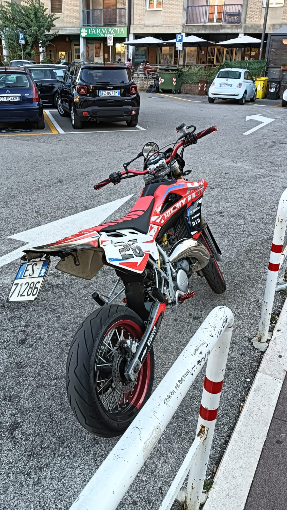

In questa immagine possiamo osservare la mia città (TITO)
QUESTA È LA MIA MOTO, HO APPORTATO VARIE MODIFICHE:espansione DEP, silenziatore DBR, carburatore kehin 36 pwk, pacco lamellare vforce 4r, collettore in alluminio. ogni pezzo di questa moto è stato un sacrificio anche la più piccola parte, magari non sarà la pii veloce ma quello che conta che è la MIA moto, e ne sarò sempre fiero.

le mie strade preferite
eccole qui